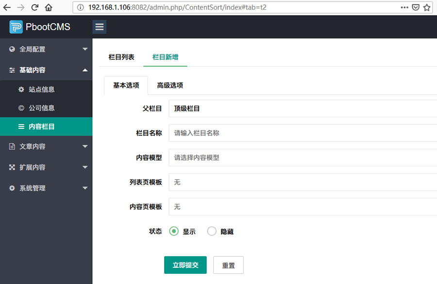
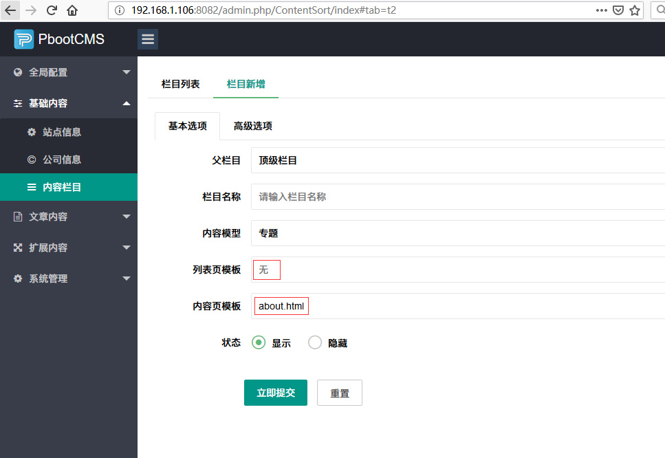
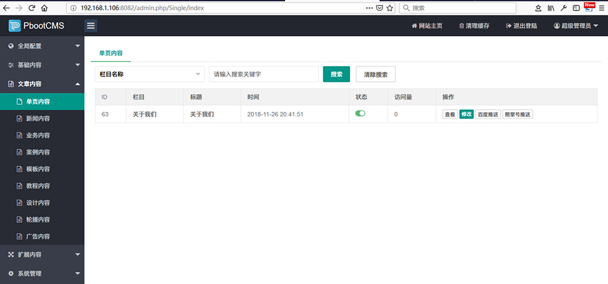

单页简单来说就是一个栏目等于一篇文章，一般用于企业站的公司简介、联系我们等。
要调用单页内容，首先要创建单页。
如果你直接去后台 “文章内容 -- 单页内容”这里寻找的话，将会一无所获，因为单页的创建是在栏目管理里面的。
下面是创建单页的步骤：
基础内容 -- 内容栏目 -- 栏目新增

接下来是创建单页的关键，选择内容模型。第一眼在内容模型里面应该看不到单页两个字，因为它在这里叫专题。
至于为什么叫专题，不用管了，选择就是了。

可以看到，选择内容模型为专题后，列表页模板 -- 无，内容页模板 -- about.html。
因为之前说过，单页就是一个栏目等于一篇文章，所以并不会有什么内容列表。
至于内容页的模板，可以使用默认的about.html，如果创建的这个单页有独立的样式，那么这里还可以填写其他的模板名称。
例如：新建一个联系我们的单页，内容页模板为contact.html，然后到模板目录，创建html文件，命名为contact.html。那么这个单页栏目的样式就会使用contact.html这个模板页面的样式了。
再回到“文章内容 -- 单页内容” 就可以看到刚才建立的单页了。

在添加完单页的内容后，就可以开始写代码调用了。
代码调用部分比较简单，这里就简单写一下，更多的调用参数大家可以参考官方手册。
1、在首页或其他聚合页面调用
方法1：
{pboot:content id=单页的内容ID}
<a href="[content:link]">[content:title]</a>
{/pboot:content}非常简单，使用{pboot:content}标签调用就可以。注意：这里的id是内容ID，并不是栏目编码。
方法2：
{pboot:content scode=单页的分类编码}
<a href="[content:link]">[content:title]</a>
{/pboot:content}此方法需要较新的版本才支持。这里的scode是单页栏目编码。
3、在单页的自身模板调用
单页自身的模板就是创建单页时填写的模板名称，例如上文提到的about.html或者contact.html。
{content:title}
{content:content}这个就更简单了，直接在模板页面使用内容详情标签即可。